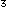

Transforming Weight for Constant Variance
We previously transformed slug length to linearise the relationship. However transforming an explanatory variable cannot fix problems with non-constant variance. In order to obtain constant variance, the response variable must be transformed.
We initially thought that slug weight might be proportional to (length). This can be generalised and rewritten as follows:
If this model holds, log(wt) will be linearly related to log(len). Indeed, this model will allow us to test whether the appropriate power is p = 3.
We will use logarithms to the base 10 here since they are slightly easier to understand for non-mathematicians, but natural logarithms (base e) could be used everywhere instead. The main change would be in the labelling on the axes.
The scatterplot of log(wt) against log(len) on the left seems fairly linear and the standard deviation of log(wt) is a lot closer to being the same for all lengths of slug. A linear model relating log(wt) to log(len) therefore seems to satisfy both the requirements of linearity and constant variance.
The least squares line is also displayed on the diagram and a plot of the residuals is shown on the right.
The Outlier
One cross on the scatterplot lies unusually far from the least squares line and the corresponding residual is very far from zero. Click on this cross to display the actual weight of the slug and the weight that is predicted from the model. This slug's weight is about a tenth of its predicted weight and the weights of other slugs with similar length. It is undoubtedly a typographic error — perhaps its weight should have been entered as 0.3 grams instead of 0.03 grams? Or maybe its length should have been 1.3cm instead of 3.1cm?
We cannot correct the data for this slug, so the only remedy is to delete the observation. Click Delete Outlier to remove the point. Since the outlier's length is fairly average, it does not have much leverage and therefore does not affect the least squares line much. (If the outlier had been either a very short or long slug, it would have affected the slope of the least squares line far more.)